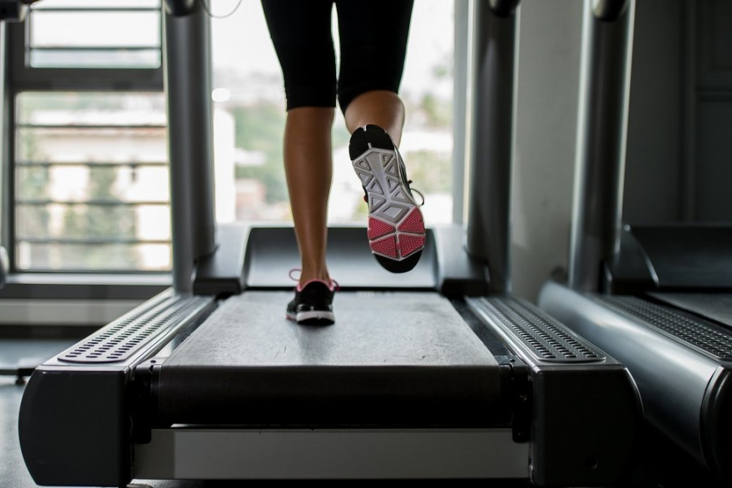

Photo gallery
2021.04.30 13:56





- “Una dieta facile da seguire per chi soffre ... - MyDiabetes
Dieta La parola dieta viene dal latino diaeta e vuol dire “stile di vita”: è proprio questo il concetto chiave su cui si basa Melarossa. Con la nostra dieta non si perde “semplicemente” peso, ma si acquisiscono una serie di informazioni per vivere al meglio la quotidianità, sentirsi bene con il proprio fisico e gestire il programma alimentare scelto con serenità. - Dieta e Cellulite - My-personaltrainer.it
Caratteristiche. Le diete vegane escludono dall'alimentazione la carne di qualsiasi animale e tutti i prodotti di origine animale e quindi rientrano, come casi particolari, nelle diete vegetariane.Oltre alla dieta vegana classica, basata su cereali, legumi, verdura e frutta e tipicamente adottata come pratica alimentare nel veganismo etico, si possono considerare diete vegane anche altre diete ... - Dolcipocodolci
una dieta equilibrata. Il secondo motivo è certamente quello del mutamento dei consumi, delle abitudini e degli orientamenti alimentari e degli stili di vita, nel quadro di una società che dimostra sempre più attenzione alle correlazioni fra alimentazione e salute, ma che contemporaneamente vede aumentare sia 7. - Istituto Comprensivo "VITO INTINI"
Dieta e salute Dietabit è il sito di informazione scientifica per approfondire la relazione tra alimentazione, stile di vita e salute. Una dieta sana ed equilibrata, insieme ad uno stile di vita corretto, costituiscono la base di partenza per vivere al meglio la propria vita. - Dietabit - Dieta e salute
Questa dieta garantisce un ottimo sollievo anche dai dolori cronici per il suo effetto antinfiammatorio. È altamente sconsigliata durante la gravidanza e la successiva fase dell’allattamento, ... - Noemi cantante e la dieta che l'ha trasformata prima di ...
Noemi cantante a Sanremo sul palco è più magra che mai: ecco il metodo META della nutrizionista che ha seguito la musicista romana e che è più di una dieta. - LINEE GUIDA PER UNA SANA ALIMENTAZIONE ITALIANA
Ricevi un piano alimentare e per la gestione del diabete personalizzato in un'unica app. Sconfiggi il diabete, perdi peso e segui una dieta sana. Inizia il quiz. - Dieta Personalizzata | Melarossa
www.unionesarda.it - Dieta di aprile, mangia questi cibi contro la spossatezza ...
In più le altre fonti proteiche: uova, pesce, legumi. Faccio un paragone con la dieta mediterranea, che è alla base delle Linee guida italiane per una sana alimentazione. Nel modello del Mare ... - www.unionesarda.it
La Dieta Mediterranea è molto più di un semplice elenco di alimenti o una tabella nutrizionale. È uno stile di vita che comprende una serie di competenze, conoscenze, rituali, simboli e tradizioni concernenti la coltivazione, la raccolta, la pesca, l’allevamento, la conservazione, la cucina e soprattutto la condivisione e il consumo di cibo.